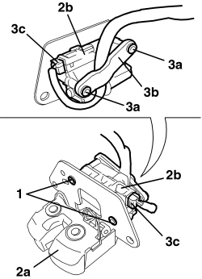

7025B70 BOOT LOCK MOTOR - R R AND CHECK LOCK SUPPLY LINE
- Path
- Procedures > 70 FITTINGS > 7025 COMPARTMENT COVERS > 7025B BOOT LID > 7025B70 BOOT LOCK MOTOR - R R AND CHECK LOCK SUPPLY LINE
- Kind
- repair procedure (removal / refitting; the operation number is the code)
- Applies to
- engines: 2.2 JTS, 3.2 JTS; all production periods
- Interactive page
- https://sloeber94.github.io/elrnDB-aBrrSpdr/en/#/946004072
Applies to: engines: 2.2 JTS, 3.2 JTS; all production periods
 Removing
Removing
 Refitting
RefittingOp. 7025B38 BOOT LID LOCK - R+R
1. Undo the bolts.
2. Remove the lock (2a) from the motor (2b).
3. If necessary, undo the bolts (3a) and separate the bracket (3b) from the motor (2b); lastly, disconnect the electrical connection (3c) from the motor.

Applies to: engines: 2.2 JTS, 3.2 JTS; all production periods
Refitting
Removing- Check that the motor is not damaged.
- If removed, connect the electrical connection to the motor, then position the wiring and the bracket and tighten the bolts.
- Position the motor on the lock.
- Tighten the bolts.